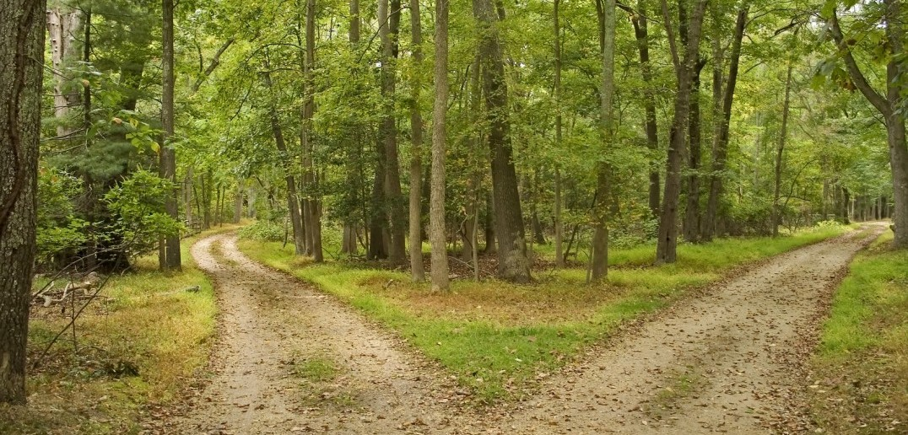

You take the "Forest of Doom" route and bump into a bear. The bear bites your map and you run through all the trees, as you turn around to see if it is still chasing you, you run into a tree, blacking out. You wake up the next morning with a bump on your head and no map, you proceed down the path you originally took until you come across a fork in the road, which will you chose?
Go LeftI'm tired of walking lets go home
Go Right 